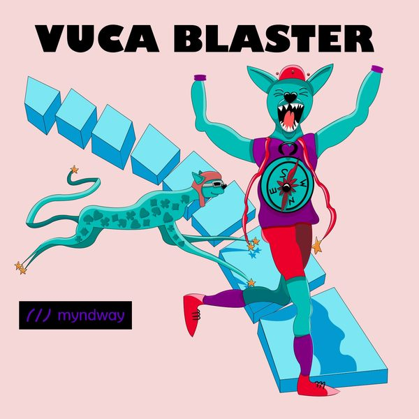

#10
Achtsame Innovation mit Herz und Verstand
Warum Innovation entsteht, wenn Menschen sich achtsam mit Herz und Verstand einbringen.
· 42 Min.
mit Dr. Martina Weifenbach
Gründerin, Rednerin, Autorin
- neugierig · Hauptwert
- authentisch
Diese Folge hören
Dort hilft jedes Abo und jede Bewertung dem Podcast.
Worum es geht
Dr. Martina Weifenbach im Interview mit Dörte Deniz zum Thema Innovation, New Work und Achtsamkeit. Martina erforschte wissenschaftlich den Innovationsprozess und kam zur Erkenntnis, dass Innovation nicht auf der kognitiven Ebene nach Schema F entsteht, sondern wenn sich die Menschen ganzheitlich achtsam mit Herz und Verstand einfühlen und einbringen. Ein inspirierendes Gespräch über Flow, Lebenssinn (Ikigai), Veränderung und vieles mehr.
Dr. Martina Weifenbach ist Gründerin, Rednerin, Podcasterin und Buchautorin "Ein Leitfaden für Zukunftsgestalter".
Viel Spaß beim reinhören.
Transkript lesen
Automatisch erstellt. Fremdwörter, Fachbegriffe und Namen können falsch erkannt sein.
0:04 Ich bin auf aus der Metropole Ruhr und ich freue mich riesig. Ich habe einen ganz tollen Gast heute bei mir zum Thema achtsame Innovation mit Verstand und mit Herz. Liebe Martina, herzlich willkommen. Schön, dass du da bist. Ja, danke für die Einladung und ich freue mich hier zu sein heute. Ja, ich mich auch. Ich würde noch ganz gerne zusammenfassen für unsere Hörer und Hörerinnen. Martina, du hast ein Buch geschrieben, ein Leitfaden für Zukunftsgestalter, bist Rednerin oder Speakerin zu Neudeutsch, auch Podcasterin, Gründerin und hast schon unfassbar viel in deinem jungen Alter gemacht. Und was ich total spannend finde, warum ich auch sofort gesagt habe, Martina muss in den Podcast kommen, du hast versucht, das ganze Thema Innovation so ein bisschen durch die wissenschaftliche Brille zu verstehen, bist dem Thema auf den Grund gegangen und hast im Vorgespräch erzählt, meine Erkenntnisse starteten immer mit Ja, aber und endeten mit Ja, aber. Und wie du sozusagen aus dem Ja, aber ein Ja und und sowohl als auch gemacht hast, da bin ich total gespannt, dass du heute deine Erkenntnisse, deine Geschichte mit uns teilst, also nochmal an dieser Stelle. Schön, dass du da bist, herzlich willkommen und gerne stell dich auch nochmal kurz vor, damit alle auch wissen, wer ist Martina, was treibt Martina um, wofür brennst du? Ja, danke. Wofür brenne ich? Was treibt mich um? Vielleicht hole ich einfach mal aus, wie bin ich zum Thema Innovation gekommen? Ich habe wie viele Menschen studiert und mir dann irgendwann mit dem Eintritt ins Arbeitsleben gedacht, okay, was treibt mich wirklich? Mich treibt wirklich diese Begeisterung für das Neue, das Andere und für mich ist das Innovation, also was Neues, was anderes, was begeistert und natürlich auch die große Frage immer dahinter, wie kommt man eigentlich zu Neues?
2:12 zu neuen Ideen, zu Kreativität, zu Dingen, die einfach anders sind und das hat, glaube ich, so ein bisschen meinen Weg auch geprägt, den ich gemacht habe über verschiedene Corporates hin zu Startups in Berlin und ich habe aber immer gemerkt, mir fehlt sowas. Mir fehlt was, wenn wir über Digitalisierung, digitale Innovation sprechen oder auch dann Entrepreneurship und dann bin ich in meine Forschung eingestiegen zu digitaler Geschäftsmodell, Innovation aus einer kognitiven Perspektive und du hast es schon gesagt, ich sage immer, meine Doktorarbeit hat mit Ja, aber angefangen und mit Ja, aber aufgehört und das hat mich einfach wirklich beschäftigt, weil ich immer dachte, wow, wir machen so tolle Innovationsreisen und Workshops und gehen das Thema doch aus einer Business Model Perspektive sehr ganzheitlich an meiner Meinung nach und trotzdem war da immer dieses Ja, aber oder der andere Satz, nicht Liebe, das haben wir schon immer so gemacht und ja, ich habe dann eine Yoga-Lehrerausbildung in San Francisco gemacht, wo ich auch meine Promotion abgeschlossen habe, in Berkeley und habe gemerkt, wow, dieses Yoga, das macht was mit mir. Ich war irgendwie, ich war glücklicher, ich war leistungsfähiger, meine Beziehungen haben sich positiv verändert und das hat natürlich den Forscher in mir so wachgerufen, der gesagt hat, was steckt denn da dahinter? Also habe ich angefangen, noch immer auf die neurowissenschaftliche Forschung zur Achtsamkeit zu gucken und das immer mehr mit meiner Innovationsforschung eigentlich zu matchen und für mich standen da plötzlich Antworten im Raum, die ich so nicht hatte. Die große Frage, die mich ja eigentlich beschäftigt hat, war, wie kann man Menschen aus dieser Angst rausnehmen vor der Veränderung? Wie kann man ihnen helfen, Mut zu finden? Und für mich war eine große Antwort, naja, indem sie es sich vorstellen können, indem sie gemeinsam träumen können, indem man eben in Unternehmen auch mal gemeinsam sich ein größeres Bild vorstellt und das ist auch Innovation, die Begeisterung dafür, was Neues zu schaffen und gemeinsam zu gestalten. Und ja, das hat mich dazu gebracht, meine Forschung irgendwann dann zu beenden, beziehungsweise zumindest die Arbeit am Forschungsinstitut in Berlin und Mindway zu gründen, zusammen mit meinem Mann Tim. Und ja, das ist jetzt unsere Reise, Achtsamkeit und Innovation zusammenzubringen in verschiedenen Trainingsangeboten für Unternehmen, um sie einfach auf diesen, ja, Veränderungsreisen zu unterstützen.
4:38 Wunderbar. Habe ich das dann richtig verstanden, dass du erst gestartet bist mit sehr wissenschaftlichen Brillen und hast versucht wirklich, das ist, Innovation zu verstehen und dem richtig auf den Grund zu gehen. Und hast dann aber gemerkt, da ist immer noch ein Welter, da ist immer noch so eine Lücke, die halt, ja, zu schließen gilt. Und hast dann entdeckt, durch Achtsamkeit, dass eigentlich Kopf oder die kognitive Ebene mit dem Herzen gemeinsam, ja, eigentlich Neues hervorbringen kann. Ja, so kann man das sagen. Also ich hatte natürlich vorher auch Berufserfahrung, wie gesagt, in Innovations- und Schnittstellenbereichen, im Corporate Venturing zum Beispiel und dann eben später auch im Startup, was eher so Business Modeling war und ja, bis Dev. Also es war so ein rein-raus-in-out-Perspektive, mal irgendwie drinnen in verschiedenen Unternehmen und dann wieder die wissenschaftliche Brille, wo wir natürlich auch viel mit großen Unternehmen gearbeitet haben, an Geschäftsmodell-Innovationsreisen. Und es war immer so ein rauszoomen und wieder ein reinzoomen, aber es hat eben einfach immer was gefehlt. Also egal, was wir für Approaches genommen haben, sei es Design Thinking oder andere Verfahren, die eben irgendwie unterstützen, dass man neue Entscheidungswege im Kreativprozess gehen kann, war das immer wieder dieser Punkt von ja, aber. Ich sag immer, es ist ein bisschen wie ein Fitnessstudio, wenn man im Pilates so richtig, richtig Gas gibt und so waren die Workshops dann auch und danach kommen die Teilnehmer und sagen, heute war es irgendwie nicht so anstrengend. So war das auch irgendwie ganz oft in diesen Workshops, wo man sich danach gedacht hat, jetzt muss doch richtig was passieren oder eben in diesen Beratungsprozessen und dann ist immer nur so ein bisschen was entstanden.
6:24 Und die großen Ideen sind immer doch relativ klein dann auch mal geworden. Also kann man sagen, dass man Innovation nicht so prozessual einführen kann nach Business Model A, sondern dass auch immer, ich sag mal, das Herz, die Gefühle, die Gedanken, alles mit auch das Wohlbefinden vielleicht mit einfließen muss, damit wirklich eine große Idee entsteht und dass wir nicht nur so kopflastig da rangehen. Ist das so eine Erkenntnis, die du dann hattest? Oder was war dein Aha-Moment? Nee, also ich glaube, mein großer Aha-Moment war schon das, was du gesagt hast, die Verbindung aus Herz und Verstand. Und im Yoga sagt man immer im Prinzip, alle Teile deines Körpers spielen zusammen und jeder Körperteil hat so seinen Grund. Und nichts anderes ist es bei der Innovation. Du brauchst die Finanzierung, du brauchst die Begeisterung, du brauchst das Herz, aber du brauchst auch irgendwo Strukturen und Prozesse, also die Kognition, um was umzusetzen. Deshalb, ich bin absolut nicht gegen Prozesse, ich bin auch nicht gegen Methodik. Ich glaube, das ist unglaublich wichtig. Nur, das reicht eben nicht, sondern es braucht auch diesen Funken, die Begeisterung, die Freude. Und ich glaube, es braucht auch ganz viel diesen Mut der Gestaltenden dann eben auch individuell und gemeinsam zu sagen, wir machen das jetzt, wir setzen das um, wir aktivieren unseren inneren Unternehmer und den gemeinsamen Unternehmergeist, um was voranzutragen, was weiterzutragen und uns auch über lange Frist für diese Idee oder das neue Geschäftsmodell zu begeistern.
8:05 Weil diesen Funken, den du dann empfindest, den kannst du eben auch weitergeben. Und ich glaube, der ist ganz wichtig in dem Prozess. Also sprich, keine Innovation ohne Leidenschaft und ohne ein Funkeln in den Augen oder ein Flackern im Herzen, also dass man auch wirklich andere andere ansteckt und anstiftet, mitzumachen? Das ist auf jeden Fall meine Überzeugung. Ja, also vielleicht würden andere anderes sagen. Ich glaube aber, das gibt auch die Kraft, manchmal dann durchzuhalten und eben Türen einzurennen, ja, Silos zu durchbrechen. Gerade im Unternehmen ist ja das Thema Innovation oft auch die Frage, wo dockt man es an? Oder das Verständnis von Innovation ist oft auch, ja sagen wir mal, so ein produktorientiertes oder technisches Verständnis. Aber eine Produktinnovation auch immer bedeutet, man muss irgendwie Elemente des Geschäftsmodells verändern, des Umsatzmodells, der Art der Kundenansprache, dass das eben was Ganzheitliches ist. Das ist unglaublich wichtig und dafür braucht es den Funken, damit ich dann eben die anderen Menschen ins Boot holen kann und wir gemeinsam diese Innovation dann weiter treiben, bis es dann eben was ist, was, ja, selber an Geschwindigkeit gewinnt. Ich finde es total spannend. Kannst du vielleicht nochmal beschreiben dieses Jahr aber, was du es am Anfang mir gegenüber erzählt hast, dass du immer dieses Jahr aber gefühlt hast?
9:27 Also wie hat sich das angefühlt? Angenommen, du hast einen super vorbereiteten Workshop zum Thema Produktinnovation oder anderer Innovation. Alle haben auch mitgemacht. Es gab keine Widerstände. Ich hatte ganz viel festgehalten. Dann bist du da raus und was war das aber? Oder wie hat sich das aber angefühlt? Also erstmal habe ich das ja aber wissenschaftlich untersucht auf Basis von Entscheidungstheorien. Und das war für mich dann irgendwann, sagen wir mal, total logisch. Also wie trifft der Mensch eigentlich Entscheidungen? Wir treffen Menschen am liebsten so Entscheidungen, dass wir uns wohl damit fühlen. Wann fühlen wir uns wohl, wenn wir Entscheidungen so treffen, dass sie von unserem direkten sozialen Umkreis auch wieder bestätigt werden? So, das ist mal der eine Teil. Der andere Teil ist, wie treffen gerade Führungskräfte Entscheidungen? Naja, die müssen viele Entscheidungen treffen, oft schnell treffen. Das heißt, die berufen sich auf das Wissen, das sie haben. Und da wird es schon irgendwie kompliziert, weil Digitalisierung und der ganze Wandel bedeutet, du kannst nicht immer alles wissen und deine Expertise ist limitiert. So, und über solche Verständnisse von Entscheidungstheorien war es ja aber für mich erstmal logisch. Worauf ich aber nie eine Antwort hatte ist, was steckt denn hinter dem Jahr aber? Und da kam für mich eben die Neurowissenschaft wirklich hilfreich irgendwie zur Hand, weil die Neurowissenschaft erklärt das eben so, dass wir sehr gerne die gewunden Bahnen im Kopf befangen.
11:00 Die gewunden Bahnen im Kopf, das sind Routinen, Prozesse, die wir kennen, Entscheidungsheuristiken, die wir kennen. Und je länger wir diese Bahnen immer wieder bedienen, dann können wir uns das vorstellen, wie so eine richtig schöne, breite, deutsche Autobahn, die man gerne immer wieder befährt. Ja, aber ist ein Zeichen, jetzt sollten wir eigentlich mal von der Autobahn abbiegen auf so eine kleine Landstraße, wo wir keine Ahnung haben, wie lange das dauert und wohin das geht. Und da wird es schwierig, gerade für Menschen in Entscheidungspositionen, weil du kannst plötzlich nicht mehr einschätzen, wie lange dauert das, wie viel kostet das, was kommt da eigentlich auf dich zu, wie funktioniert das, welche Fehler stehen dahinter. Und diese Erklärung über die Neurowissenschaften war auch mein Weg, dann zu sagen, okay, wie können wir das mit Achtsamkeit quetschen. Weil Achtsamkeit, Achtsamkeitspraxis ist eben ein Weg, sozusagen erstmal die Neuroplastizität im Behörden anzuregen. Dauert natürlich ein bisschen, aber es ist eine Chance dafür. Und es ist auch ein Weg, manchmal die Vorstellungskraft zu erweitern, also mal rauszugehen aus den gewohnten Bahnen und das anderes zu sehen, zu spüren, mit dem Herzen eben auch wahrzunehmen und dann eben Kopf und Geist zu verbinden. Und so war das für mich, also das ja aber hat in mir immer ausgelöst. So what? Was ist da noch? Und wie kommen wir da hin? Und wie kann ich Menschen dabei unterstützen?
12:19 Also mich hat es manchmal, habe ich eher traurig gemacht. Und die wirklich tollen Ideen, die entstanden sind, die ganz oft auch wirklich Ideen waren, die meiner Meinung nach unglaublich wichtig sind, auch gesellschaftlich wichtig sind, die ja einen nachhaltigen Impact gemacht hätten, die dann irgendwie so versandelt sind. Und das war für mich, glaube ich, das Schwierigste festzustellen. Weil da wären so viele tolle Ideen, die unsere Welt auch ein bisschen besser machen und tolle Menschen diese umsetzen könnten. Und ganz oft versacken diese Ideen eben. Wäre denn auch eine Erkenntnis oder vielleicht auch eine Empfehlung von dir, obwohl du natürlich auch promoviert hast in dem Thema, immer zu sagen, letzten Endes ist es wichtig, egal welche Entscheidung du triffst, aber dass das Bauchgefühl positiv ist. Also nicht nur rational zu entscheiden, aber dann im Endeffekt Bauchweh zu haben, den nächsten Schritt zu gehen, sondern dann im Zweifel lieber sagen, hör auf dein Bauchgefühl. Wenn es sich gut anfühlt, dann geh erstmal den Weg. Auf jeden Fall. Ja, Bauchgefühl ist auch nochmal ein guter Hinweis. Das sind wir bei dem Körper und dem Ganzen wieder. Auf jeden Fall. Und der Bauch übrigens steht für mich auch fürs Tun, also die Handlungskraft. Und ich glaube manchmal auch, wenn man auch sein Bauchgefühl hört, heißt das auch, du hast die Kraft, das umzusetzen.
13:40 Also das ist, glaube ich, fast noch wichtiger, als das in der Theorie erstmal so verstanden wird. Ja, und wir sind ja vielleicht in Deutschland ganz besonders kognitiv unterwegs, Verstandesebene. Und gerade auch so in der Businesswelt, da haben ja Gefühle nichts zu suchen. Und wenn du jetzt schon von Yoga erzählst, ja, das schaltet ja schon vielleicht 50 Prozent der Belegschaft ab und sagt, ja, bleib mir weg mit den Räucherstäbchen oder mit der Klangschalentherapie. Das sind ja auch so Assoziationen, die viele Menschen haben. Wie lädst du denn auch vielleicht diese eher kognitiv denkenden und handelnden Menschen ein, zu sagen, ja, das tut nicht weh, versuch es mal. Wir sind nicht nur Hirn, ja, wir sind viel mehr. Das Bauchgefühl gehört dazu, das Herz gehört dazu. Wie begeisterst du die dann oder wie stiftest du die Menschen an, die ein bisschen reservierter sind? Ja, es ist eine richtig gute Frage, die mich von Anfang an auf dieser Reise auch begleitet hat. Und das ist auch ein Grund, warum ich das alles so wissenschaftlich auch gearbeitet habe. Also damit ich eben sein kann, hier diese Studien zeigen so und so viele Minuten Praxis, also Meditationspraxis am Tag, zehn Minuten Meditationspraxis am Tag, zeigen einen Effekt nach sechs bis acht Wochen in Bezug auf A, zum Beispiel die Fähigkeit des Lernens, B in Bezug auf die Kreativität, C in Bezug auf die Empathie, je nachdem, welche Meditationsform man zum Beispiel wählt.
15:12 Und dann kannst du, ich mache das nicht so gerne, es gibt natürlich auch Studien, die sagen hier, diese Art von Praktiken hilft eben auch Führungskräften, bessere Entscheidungen zu treffen. Die hilft eben auch, dass Menschen leistungsfähiger und produktiver werden, was total Sinn macht, weil die Meditationspraxis hilft uns auch, uns besser zu konzentrieren, mehr Fokus zu haben. Das ist die Idee von Achtsamkeit, ja, präsent zu sein. Seid präsent mit einer Aufgabe und du wirst merken, du schaffst die eine schneller, als wenn du zehn nebeneinander her machst, so im Prinzip. Und wenn man das so erklären kann über Zahlen, über Fakten, über Daten, dann holt man die sehr rationalen Menschen immer sehr schnell ab. Nichtsdestotrotz, und das sage ich auch immer wieder, Achtsamkeit ist eine persönliche Erfahrung. Du erlebst Präsenz im aktuellen Moment ganz anders als ich, weil du bist woanders, du stehst woanders, da sind andere Gefühle, andere Emotionen, andere Sinn, ist Empfindung da. Und das ist eben auch Achtsamkeit, ja, zu akzeptieren, ich stehe da, wo ich bin, ich bin, wer ich bin. Und gleichzeitig erforsche ich aber vielleicht auch noch ein bisschen mehr, wer bin ich wirklich? Was möchte ich wirklich? Welche Ziele habe ich? Und wenn ich das, umso besser ich das verstehe, umso mehr ich das sozusagen in meine Arbeit, in mein berufliches Tun einbringen kann, desto mehr meiner Meinung nach entsteht auch schon wieder Gestaltungsspielraum und Raum für Innovation und Veränderung.
16:39 Dann sind wir auch eigentlich schon mitten im Thema New Work. Was ist es, was du wirklich, wirklich willst? Wofür stehst du? Und ich hatte auch immer so die Erkenntnis, wenn du weißt, wofür du stehst, was dich motiviert, was dich aus dem Bett springen lässt, dann hältst du auch vielleicht mal Gegenwind oder komplexe Situationen, Chaos oder Krisen viel besser aus, weil du weißt, ich bin hierfür da und trotz vielleicht schwieriger Zeiten habe ich einen inneren Guide oder einen Stand, eine Haltung zu dem. Ich lasse mich nicht so schnell umblasen und bin irgendwie auf 10, 20 Hochzeiten gleichzeitig. Finde ich sehr, sehr spannend, was du erzählst. Martina, viele Menschen haben ja auch das Problem, ich bin so busy, mein Terminkalender ist voll. Und jetzt kommt die Martina und will uns noch Blocker zum achtsamen da rein drücken. Der explodiert eh schon. Wie kann man denn den Menschen wieder sagen, okay, lass uns mal gemeinsam deinen Terminkalender entrümpeln, nimm dir ein bisschen Zeit, du wirst merken, du machst im Endeffekt nachher deine Arbeit leichter, vielleicht auch schneller, kreativer.
18:00 Genau, was würdest du da empfehlen? Und die zweite Frage wäre, ist Multitasking eine Urban Legend? Geht das gar nicht? Weil man sagt immer, Frauen könnten super Multitasking, aber ist das eigentlich nur so eine Urban Legend? Gute Frage. So, jetzt, was war die erste Frage? V-O-Glamin-Kalender, wie kriegen wir da noch Zeit rein? Achtsame, geht eigentlich Hand in Hand. Ich glaube ja, dass wir so eine Abhängigkeit von Busyness etabliert haben. Wenn ich nicht sage, ich bin super busy und ich habe ganz viel zu tun, dann bin ich auch irgendwie nicht cool und nicht anerkannt. Und also ganz viel von diesem Busy-Sein und Busy-Sein-Müssen sind Glaubenssätze. Von, wer muss ich eigentlich sein im Berufsleben, um von anderen akzeptiert und anerkannt zu werden? Oder auch mal sagen zu können, ich habe jetzt keine Zeit für dieses Meeting oder ich habe auch keine Zeit, nochmal irgendwie was zusätzlich anzunehmen. Und ich denke, das ist ganz viel auch in Unternehmenskulturen verankert. Also den Dialog mal darüber zu führen, ist mehr wirklich immer besser. Und sind wir wirklich leistungsfähiger, wenn wir immer irgendwie unsere Zeit und unsere Ressourcen zu 180 Prozent ausschöpfen?
19:21 Also ich glaube da gar nicht daran. Das ist absolut konträr zu was Innovation bedeutet und Kreativität. Weil Kreativität und Leistung und gute Leistung braucht Raum. Warum? Weil nur wenn wir Zeit für bestimmte Tätigkeiten haben, kommen wir in einen Zustand, den sogenannten Flow-Zustand, wo wir wirklich tief und versunken unsere Arbeit machen. Und das ist was, also man sagt, man braucht so ungefähr eine halbe, dreiviertel Stunde, bis man in diesen Zustand kommt. Dann stellen sich auch so ein bisschen die Gehirnwellen ein. Also man kommt aus dem Stress-Gehirnwellen-Modus raus in eine tiefere Ebene. Es ist fokussierter, es leistungsfähiger, es kreativer und auch einfach mehr bei sich. Und wenn man sich das mal vor Augen führt, dann kommt man glaube ich automatisch an den Punkt, dass man sagt, was bringt mir eigentlich dieser volle Terminkalender? Da kann ich ja nicht wirklich gute Arbeit leisten, wo ich am Ende des Tages sagen kann, ich bin wirklich zufrieden mit mir selbst. Und ich denke, das ist das Wichtigste dieses, was du gesagt hast, was ist ein Work? Ja, was möchte ich, warum und wofür und für was schlägt mein Herz? Und wenn ich meiner persönlichen Leidenschaft folge, persönlichen Zielen folge etc., dann hat das selten was damit zu tun, dass ich schnell irgendwelche Checklisten abhake oder sage, ich habe heute 200 To-dos von meiner Liste irgendwie abgearbeitet.
20:44 So, das ist vielleicht mal so das eine. Das heißt, ich denke, zum Entrümpeln des eigenen Kalenders gehört auch eine eigene Motivation, die von innen herauskommt, die sagt, ich möchte meine Arbeit gut machen und deshalb erlaube ich mir auch, mir am Nachmittag drei Stunden zu blocken, um mich zu fokussieren und zu konzentrieren. Und es setze ich dann eben auch durch gegenüber den Kollegen und Kolleginnen. Da gibt es so ein paar Tipps und Tricks, die ich immer empfehle, zum Beispiel eben Blocker im Kalender, regelmäßige Pausen, Videokonferenzen nach der Zoom-Rule, nicht länger als 40 Minuten und dann auf jeden Fall Pausen auch gemeinsam und die sich einfordern. Und dann kann man eben für sich selbst Rituale auch etablieren, um immer wieder in die Ruhe zu kommen. Also mal irgendwie fünf Minuten bewusst auf den Atem hören oder an den Horizont gucken. Oder, oder, oder, habe ich viele Tipps mehr. Aber ich denke auch das, sich selbst immer wieder bewusst zu machen, wie fühlt sich Ruhe an? Wie fühlt sich Loslassen an von diesem kleinen Männchen auf der Schulter, das die ganze Zeit peitschen sagt, jetzt musst du aber noch was machen? Und wie fühlt sich das auch an, in einem Flow-Zustand zu sein? Und ich glaube, je mehr wir das fühlen und empfinden, desto mehr zieht es uns da einfach auch hin, weil wir ja da auch zufriedener mit unseren eigenen Tätigkeiten und unserem Tun sind. Und dieses Empfinden sollte eigentlich das sein, meiner Meinung nach, was das Arbeitsleben ausmacht und nicht Stress und Druck und Krampf in der Magengrube und natürlich auch die Effekte, die Stress und Druck langfristig hat, negativ für das Immunsystem, negativ für unsere Beziehungen, fühlt sich nicht gut an und letzten Endes, das wir auch immer an unser Herz denken, Cortisol-Level etc. So, Multitasking, das ist eigentlich die gleiche Antwort.
22:30 Ja, wir sind nicht zum Multitasking gemacht, unser Gehirn ist nicht zum Multitasking gemacht, weil unser Gehirn sich eigentlich gar nicht auf zehn Sachen gleichzeitig fokussieren kann. Und wer mal wirklich kritisch drauf schaut, wie gut bin ich, wenn ich fünf Aufgaben nebeneinander parallel hermache versus ich mache eine Sache, konzentriere mich drauf und dann die nächste und die nächste und die Fehlerrate vergleicht, wird relativ schnell merken, dass die deutlich höher ist, wenn er fünf Sachen gleichzeitig macht. Wo ich mir dann immer denke, das bringt uns doch auch wieder automatisch dahin zu sagen, wir wollen gesünder arbeiten, bewusster arbeiten und dadurch auch besser arbeiten für uns selbst und auch für unsere Kollegen und Kolleginnen. Und es gibt ja auch zumindest einen Spruch, der mir jetzt gerade in den Kopf kam. Ich weiß nicht, ob das wissenschaftlich belegt ist, aber wenn du tust, was du liebst, musst du nie wieder arbeiten. Was ich meine ist, also wenn wirklich so deine Berufung, deine Leidenschaft gefunden hast und da auch jeden Tag gerne für aufstehst, glaube ich, bist du noch resilienter, noch belastungsfähiger, bist auch meistens eher bereit, noch ein paar Stunden drauf zu hauen, weil du sagst, ey, ich sehe den Sinn dahinter, ja. Also die ganze Purpose-Diskussion, es motiviert mich, also ich bin intrinsisch motiviert und nicht extrinsisch, genau.
23:54 Und wenn das erfordert aber erstmal die Entwicklung oder die Erkenntnis bei jedem Menschen, zu wissen, was ist das für ich brenne, und, ne, klar, arbeiten müssen wir alle, wir müssen die Rechnungen bezahlen, aber Arbeit sollte ja nicht nur Mittel zum Zweck sein, sondern, ja, auch irgendwie einen positiven Fußabdruck vielleicht hinterlassen, wo du sagst, ja, das hatte irgendwie einen Sinn, ja. Aber das ist, glaube ich, auch ganz viel bewusst machen, selber in den Spiegel gucken, wofür bin ich da und was möchte ich beitragen, ja, und was mache ich gerne. Ja, also ich, wir machen bei Mindvay auch viel, also auch Training zum Beispiel zum Thema Purpose Sinn, individueller Sinn, aber auch Purpose vom Team, von der Organisation und wir nutzen zum Beispiel hier viel das Ikigai, das kennst du wahrscheinlich auch aus deiner Arbeit und was ich an dem Ikigai mag, ist, dass es ja irgendwie zum einen sagt, okay, deinen Sinn, dein Why, ja, das findest du eben, indem du verschiedene Aspekte anschaust, die dir wichtig ist, also was sind meine Leidenschaften und da fängt es oft schon an, ganz viele Menschen wissen gar nicht mehr, was ihre Leidenschaften sind, die haben das irgendwie auf ihrem Weg vergessen. Dann auch, was sind deine Stärken, was kannst du richtig gut, ja, oft ist das ein Stärkenprofil, das sehr berufsorientiert ausgerichtet ist, wo man vielleicht auch andere Stärken so ein bisschen vergisst, dann aber auch, mit was möchtest du Geld verdienen, das Thema Finanzen und ich finde das fair, dass man das auch betrachtet und dann das Thema Sinn, also was erachtest du als sinnvolles Tun, und diese Kombination, die ist eben dann oder sagt zumindest das Ikigai, da kommt so eine Vorstellung von deinem Why, deinem Warum und deinem Wozu zusammen und eine Zielausrichtung.
25:40 Was ich aber gesehen habe über die Jahre jetzt und viele Coachings hinweg, ist ein Why, ein Purpose, verändert sich auch immer mal wieder, darf sich auch verändern, das was wir als sinnvoll erachten, darf sich auch verändern und ich denke, das ist ganz wichtig, damit man sich auch nicht so in diesen Purpose-Verschleiß begibt, weil ich habe auch das Gefühl, gerade aktuell, manchmal entsteht da ganz viel Druck, jetzt muss ich doch mein Why wissen und dann muss ich das doch auch durchsetzen und so. Und auch das, finde ich, ist eine Übung der Achtsamkeit, zu sagen, ich weiß, wer ich bin, ich weiß, was ich möchte, ich weiß meine Ausrichtung, aber ich erlaube mir auch immer wieder nach rechts und links zu gucken und es anzupassen. Und für mich ist das auch sinnbildlich für eine Work-Organisation, ja, also eine Organisation, die sich immer wieder weiterentwickeln darf, auf Basis von den Individuen, die sich immer wieder weiterentwickeln dürfen, aber eben auch auf Basis des Systems, das sich immer wieder weiterentwickeln darf. Und dass sich das Warum auch vielleicht ändert. Also ich hatte vielleicht vor zehn Jahren ein anderes Warum als heute. Vielleicht für die Hörer und Hörerinnen, die Ikigai noch nicht kennen. Es kommt aus dem japanischen dieser Lebenssinn. Und da sind vier Bereiche. Was braucht die Welt? Womit verdiene ich Geld? Was kann ich gut? Und was möchte ich machen?
27:04 Oder was will ich wirklich? Und die Schnittmenge aus allen vier Dimensionen ergibt dann sozusagen deinen Lebenssinn. Ich fand das aber sehr spannend, dass du gesagt hast, dass wir da nicht in so einen Druck kommen. So, jetzt musst du auf Knopfdruck dein Warum, deine intrinsische Motivation und dein Tun irgendwie benennen können. Sondern ja, das vielleicht dann achtsamer gucken. Okay, vielleicht auch mal in die Kindheit gucken. Wenn ich es vergessen habe, worin war ich denn gut? Was fiel mir leicht? Was hat mich irgendwie beflügelt? Für Menschen, die gar nicht mehr wissen, was vielleicht eher Warum in der Organisation, in der Berufswelt oder wie auch immer ist. Absolut, ja. Das ist wirklich so, was du sagst, das ist was Agiles, das ist was, was akten darf und eben diesen Druck rauszunehmen. Wir haben da so vier, fünf Wöchige Reisen mit verschiedenen Teilnehmerinnen gemacht zu dem Thema Karpus und da habe ich wirklich immer diesen Druck erlebt. Und wenn man den Druck rausnimmt, dann kann das Leben ja überhaupt erst fließen. Und das fand ich halt immer sehr schön auch zu sehen, was da dann eben, wie du am Anfang gesagt hast, was für eine Freude, was für eine Leichtigkeit entstanden ist. Und ich glaube, Freude und Leichtigkeit sind auch Energien, die es einfach braucht in Unternehmen und Organisationen. Weil das ist ein bisschen auch Abschied von Druck und Stress und Leistungsgedanken.
28:32 Und meistens entsteht dann fast noch mehr Leistung, aber eben aus einem anderen Energielevel heraus und vielleicht auch aus einem anderen Wuchslevel heraus. Und davon profitieren eigentlich alle. Ja, und gerade in diesen komplexen Zeiten, die wir gerne mal mit VUCA, Volatil, Unsicher, Komplex und Ambivalent, uns dreht schon der Kopf. Ja, wenn man da wieder so diese Leichtigkeit, die Energie und so vielleicht spürt, dann glaube ich, kommt man auch besser durch diese komplexen Zeiten, die sich wahrscheinlich auch nicht mehr zurückentwickeln werden. Also ich glaube, die Veränderung wird immer schneller werden, ja, durch fortschreitende Technologien und Globalisierung, Klimawandel, Pandemie. Ja, genau. Was wollte ich dich noch fragen? Also was ich total spannend war, du hattest gesagt, Flow braucht Zeit. Vielleicht kannst du das nochmal beschreiben. Flow, was ist für dich Flow im Flow sein? Und vielleicht auch so ein bisschen einen kleinen Einblick geben in deine Arbeit, konkret in welchen Organisationen bist du unterwegs und wie bist du da unterwegs? Sind das auch ermittelständische Unternehmen oder große Konzerne, die auch aufmerksam geworden sind, um das Thema Achtsamkeit und achtsame Innovation?
29:51 Ja, fangen wir mal mit Flow an. Also ich glaube, der Begriff Flow ist von so, ich kann diesen Namen nie aussprechen. Mikkel, tschüss, tschüss. Vielleicht kannst du das perfekt aussprechen. Und der hat das ganz schön beschrieben, ohne dass es jetzt zu theoretisch werden soll. Ich versuche das aber auch nochmal über Gehirnwellen zu erklären. Also was ist, wenn wir unter Stress und Druck stehen? Dann ist das Gehirn im Prinzip in einer sehr hohen Frequenz unterwegs. Das heißt, wir sind hoch fokussiert. Wir empfinden vielleicht auch so ein bisschen Stress und Druck im Körper. Und hoch fokussiert heißt im Prinzip auf eine Sache fokussiert und am besten hier mit Hochgeschwindigkeit das durchzupeitschen. Ich überspitze das ein bisschen. Im Flow-Zustand sind wir nicht auch so in einem hochfrequenten Zustand, sondern da schlagen diese Wellen ein bisschen weniger schnell aus. Und dadurch, wir sind ruhiger, wir sind entspannter, es entsteht mehr Raum für die Ideen, für Kreativität. Und gepaart mit dem Flow-Zustand heißt das, das ist auch ein Zustand der positiven Leistungsfähigkeit über einen längeren Zeitraum. Das kann man, glaube ich, auch ganz schön im Körper dann messen. Da fließt nicht so viel Cortisol, das ist einfach kein Zustand, der sich anfühlt wie ein Stress-und-Druck-Zustand, sondern das fühlt sich eher an wie ein Verbindungszustand, in dem Sachen im Fluss sind.
31:20 Ich kann das konkret zum Beispiel beschreiben bei mir, wenn ich schreibe. Wenn ich schreibe, ich brauche immer so eine halbe Stunde, bis ich reinkomme, bis ich das System beruhige und wieder der Fokus öffnet. Also nicht so auf eine Sache gerichtet, sondern eben viele Ideen auch in den Kopf kommen dürfen. Deshalb auch das Thema Achtsamkeit so wichtig. Und dann fließt das einfach. Und irgendwann stellt sich im Flow-Zustand ein Gefühl ein von Zeitlosigkeit. Also irgendwie verfließt die Zeit einfach und die Zeit selbst fühlt sich auch anders an. Also eine Minute unter Stress fühlt sich ganz anders an als eine Minute im Flow-Zustand. Und im Nachhinein, nach so einem Flow-Zustand, wenn man da langsam wieder rausfindet für sich, hat man so ein Gefühl von Zufriedenheit von, das finde ich jetzt richtig gut. Bei mir persönlich muss ich sagen, das ist auch oft was, wo ich danach Sachen durchlese und mir der Gebärtin das geschrieben. Also das finde ich auch immer sehr spannend zu sehen. Da ist man wirklich irgendwie woanders, aber eben präsent. So, das zum Flow. So, was war die Zusatzfrage, die du gestellt hast? Oh Mann, ja, ich sollte immer nur Einungssage schreien. Ich glaube, du hast gesagt, wie bringen wir das in unsere Arbeit? Für mich ist es in die Organisation, also in welchen Organisationen seid ihr unterwegs und wie geht ihr da vor?
32:40 Genau. Ja, danke für die Frage. Also, in welchen sind wir unterwegs und wie gehen wir vor? Wir kommen über das Thema Achtsamkeit, Innovation und Work oder die Themen vielmehr, weil wir sagen, im Prinzip Work und Innovation brauchen eine Basis und die Basis ist Achtsamkeit. Wie definieren wir Achtsamkeit? Wir definieren Achtsamkeit als Präsenz im aktuellen Augenblick und Achtsamkeit auch als Förderung von ganz wichtigen Zukunftsfähigkeiten, über die wir heute so gerne sprechen, wie Resilienz, Empathie, Innovation und Kreativität und Veränderungsbereitschaft. So, das ist, glaube ich, wichtig, um zu verstehen, wie das Thema Achtsamkeit bei Work und Innovation andockt. Und was haben wir daraus gemacht aus diesem Verständnis von Achtsamkeit? Wir haben eben gesagt, okay, wir bieten verschiedene Programme an für Mitarbeitende, für Führungskräfte, für Teams und Organisationen zu diesen Themen, die man eben flexibel auf Basis unseres Baukastens anpassen kann. Und das ist eine Kombination aus Tools, also aus Meditation, aus achtsamen Praktiken und Rituale für Einzelne, für Teams. Auch ganz viel das Thema gesundes digitales Arbeiten und Wellbeing. Und paaren das aber mit Kreativansätzen, zum Beispiel aus dem Design Thinking oder mit Ansätzen eben aus dem Work. Und mein Verständnis ist, dass man so zum Beispiel Themen wie Selbstorganisation natürlich empfinden kann.
34:17 Wenn ich weiß, wie wir schon gesagt haben, wofür ich stehe, was ich mache, dann entsteht Selbstorganisation natürlicher. Und wenn ich da in einem Agreement auch mit dem Team bin, dann hat jeder irgendwie das Gefühl, ich darf auch Verantwortung übernehmen. Und wie setzen wir das denn jetzt um? In was für Organisationen sind wir unterwegs? Das ist auch immer sehr spannend, gerade wenn man aus dem Startup-Hintergrund kommt. Die Investoren fragen ja tendenziell, was ist eure Industrie, was ist euer Fokus und wie skaliert ihr? Und es hat vielleicht einen Grund, dass wir keine Investoren haben, weil wir haben keinen Industriefokus. Also wir haben mittlerweile mit so vielen Industrien gearbeitet. Wir arbeiten mit Universitäten, wir arbeiten mit Verwaltungen. Also das ist nicht eine Industrie. Was für uns wichtig ist, dass eine Bereitschaft da ist von der Organisation, das eben auch zu machen und sich zu committen. Ganz oft ist es auch wichtig, dass die Führungskräfte eine Bereitschaft haben, fast schon wie ein Vorbild, das Thema auch mitzutragen und in die Umsetzung zu bringen. Und das ist viel mehr Voraussetzung, als jetzt zu sagen, das ist die Industrie oder die oder die. Und ja, die schönsten Erfahrungen hatten wir, das muss ich wirklich sagen, mit den einfachen Methoden und sowas wie achtsamen Morgenmeditation oder achtsamen Start in den Tag, wo wir wirklich gesehen haben, wir fragen das auch immer ab, ja, das hat einen Effekt auf die Leistungsfähigkeit im Team.
35:43 Es hat einen Effekt auf die Beziehungen im Team. Es hat auch einen Effekt darauf, wie sich die Leute am Ende des Tages fühlen, gerade jetzt im Homeoffice, was ja auch für ganz viele Menschen sehr belastend ist. Und ja, und das ist für mich eigentlich das Schönste an unserem Tun, wenn wir diese Rückmeldung bekommen und sehen, ja, die Menschen merken, es tut ihnen gut, es bringt ihnen was. Und wenn dann das sogar auf Organisationsebene passiert, dass, ja, die Initiatoren merken, da bewegt sich auch was in der Organisation. New Work wird zu einem natürlichen Bestandteil. Innovation wird zu einem integrierten Prozess, dann freue ich mich und hoffe, dass sich das so weiterträgt. Ja, und du hast ja gerade gesagt, ihr habt keine Industrie im Fokus, sondern was ich ganz stark mitnehme, ist so, ihr fokussiert auf den Menschen. Und dann ist es egal, ob der Mensch jetzt in der Verwaltung arbeitet oder in einem mittelständischen Unternehmen oder in einem Startup, sondern ihr schaut, okay, wo steht der Mensch gerade oder die Menschen in dieser Organisation und wie können wir die bestmöglich achtsam, innovativ, kreativer werden lassen. Ganz zum Anfang, Martina, hast du einmal vor dieser Neuroplastizität gesprochen. Das gibt diese Bezeichnung ja auch im Zusammenhang mit dem Thema Mindset, ja, dass das Mindset auch sozusagen sich anpassen kann, beweglich, anpassungsfähig ist.
37:15 Und ich hatte jetzt gerade das Bild im Kopf, dass wir keine fixe Organisation sind, keine fixe, starre Organisation, sondern auch eine, also eine lernende Organisation, eine anpassungsfähige, im Sinne von agil, genau. Und dass ihr sozusagen auch da so ein bisschen Wegbereiter, Wegbegleiter seid auf diesem nächsten Schritt, dass alles im Fluss ist und sich nicht so starr anfühlt, wenn man das auch Arbeitsspaß macht und wie besser und kreativer am Ende des Tages auch ist, wenn man das ein bisschen achtsamer macht. Ja, also besser hätte ich unseren Ansatz nicht beschreiben können, denn vielen Dank. Ja, es ist genau das, wo wir herkommen. Also genau, ich sage immer change your brain, change your game. Und das ist genau das. Und diese Agilität im Kopf ist eben auch dann die Agilität, die in der Organisation Bewegung schafft und schaffen darf. Und ich glaube, die ist wahnsinnig richtig in dieser VUCA-Welt, in der wir uns ja alle befinden. Und ich glaube, die auch immer Teil von unserem Dasein sein wird. Aber es ist trotzdem auch gut zu verstehen, dass der Mensch an sich so angelegt ist, dass er die Komfortzonen liebt und Stabilität liebt. Also wir wollen ja uns irgendwie morgens beim Aufstehen auf etwas verlassen können.
38:38 Und das bricht halt alles so arg weg. Und man merkt, das einzig Stabile ist, ich kann mich auf mich verlassen, auf meine innere Haltung, wie ich hier halt in die Welt gehe und zuversichtlich bin, neugierig bin und trotz aller Komplexität irgendwie auch noch so eine, ja, Energie und ja, Freude auch irgendwie am Tum. Und nicht so, oh Gott, wieder aufstehen und wie bei Momo und die grauen Herren so die Zeit tickt. Und ja, wir sind fremdgesteuert durchs Leben oder durch die Berufswelt gehen. Ja, also für mich eine ganz wichtige Erkenntnis war, die passt, glaube ich, super zu dem, was du gerade gesagt hast. Uns erzählt man ja immer, in den ersten Jahren der Kindheit prägt sich das Gehirn aus und dann, das war es dann hier. Ende Gelände und jetzt geradeaus starre Strukturen, Prozesse und Gewohnheiten. Und für mich war das schon eine große Erkenntnis in diesen Studien eben auch zu sehen, dass du durch gewisse Erksamkeitspraktiken, durch Ruhe, durch Gelassenheit eigentlich immer wieder dein Gehirn anregst, neue graue Zellen zu produzieren, ja, und neue Wege und neue Bahnen irgendwie zu schaffen in deinem Kopf. Das heißt im Prinzip nichts anderes als, du kannst uralt werden und trotzdem irgendwie immer wieder, ja, mit deinem Gehirn ganz wunderbar zusammenarbeiten, um, ja, Raum für dich selbst zu schaffen in deinem Leben.
40:04 Und ich finde, das sind großartige Nachrichten, die uns vielleicht dann auch nochmal darin und unterstützen, das zu hinterfragen, was du gerade gesagt hast, Routinen, Prozesse, Glaubenssätze und eben diesen Ja-Aber oder diesen, ja, das haben wir schon immer so gemacht, nicht als Status Quo anzusehen, sondern zu sagen, okay, haben wir vielleicht immer schon so gemacht, aber was denn noch, ja, und dann letzten Endes, und ich finde, das ist auch immer wieder wichtig, sich selbst auch immer wieder zu fragen, was kann ich heute gestalten? Vielleicht kann ich heute nicht die Welt verändern, aber was kann ich heute tun in meinem Job, in meinem Leben und dann wieder am nächsten Tag, was kann ich heute tun? Und ich denke, das ist auch ganz wichtig für sich selbst, diese Erfolgsmomente zu schaffen durch die kleinen Ziele, um dann eben auch zu sehen, ich kann wirksam werden in kleinen Schritten und die zahlen dann eben vielleicht dann auf den großen Purpose und den großen Sinn auch ein. Ach, das sind wunderbare Abschlussworte, aber bevor wir zum Ende kommen, liebe Martina, hast du noch eine Frage, die ich jetzt nicht gestellt habe, die du gerne noch beantworten wollen würdest? Nein. Also ich fand unsere Reise gerade sehr schön. Ich glaube, ich habe wirklich gar keine Fragen mehr. Ich habe eher überlegt, ob wir vielleicht den Zuhörern und Zuhörerinnen noch eine Frage mitgeben möchten.
41:26 Vielleicht fällt dir spontan was ein, sonst nehme ich mir noch einen Moment, um darüber nachzudenken. Ja, meine Frage wäre, wofür bist du da und was möchtest du beitragen? Das ist so meine Lieblings-Check-In-Frage auch. Dann ergänze ich das mit der Frage, die ich gerade schon gestellt habe. Und was kannst du heute tun? Ach, wunderbar. Liebe Martina, ich sage ganz herzlichen Dank, dass du dir die Zeit genommen hast. Also bei mir sind ganz, ganz viele Bilder entstanden, während ich dir lauschen durfte. Und ja, ich wünsche dir alles Gute, dir und deinem Mann. Und ich bin sicher, wir werden noch viel voneinander hören. Vielen Dank für das schöne Interview, Tate.

3 Key Learnings
- Ohne Begeisterung gibt es keine Innovation; Prozesse allein reichen nicht.
- Flow braucht Zeit und Ruhe; Multitasking und voller Kalender senken die Leistung.
- Der eigene Sinn darf sich ändern; Purpose-Druck blockiert.